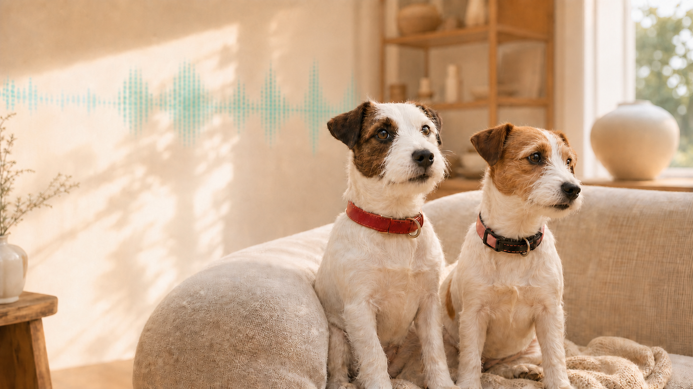

CHOOSE YOUR WAY IN
Start with the feeling.
Or follow the signal.

THE DELIGHT-FIRST EDITION
Just show me
the magic.
Meet the dogs, enjoy the jokes and see why Overbark belongs in your pocket.Keep it simple for me →
THE SYSTEM-FIRST EDITION
Give me
the signal path.
Explore FFT analysis, Apple Vision, the Neural Engine and the zero-cloud architecture.Bring me to the dark side → SAME DOG.
SAME DOG.DIFFERENT DEPTH.